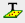
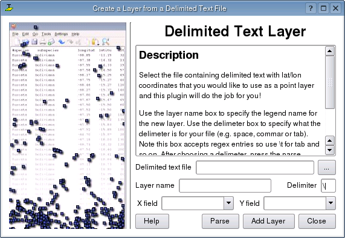
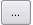
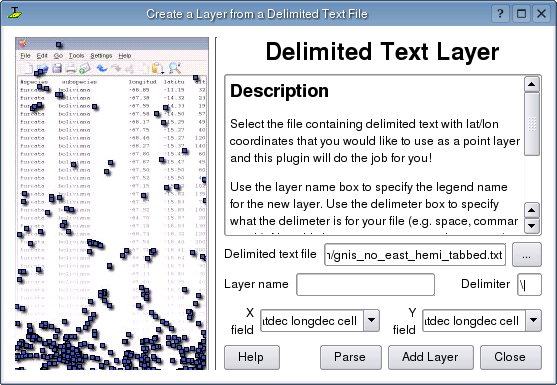
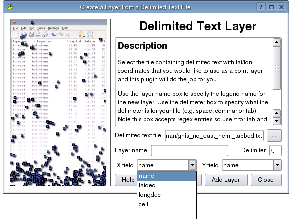
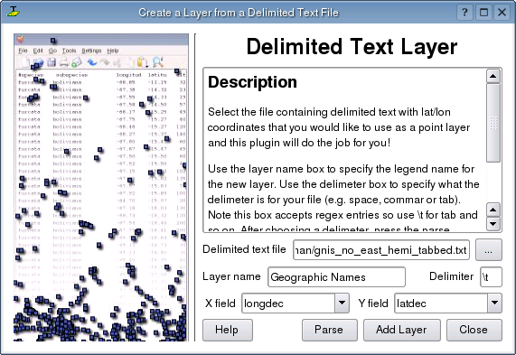
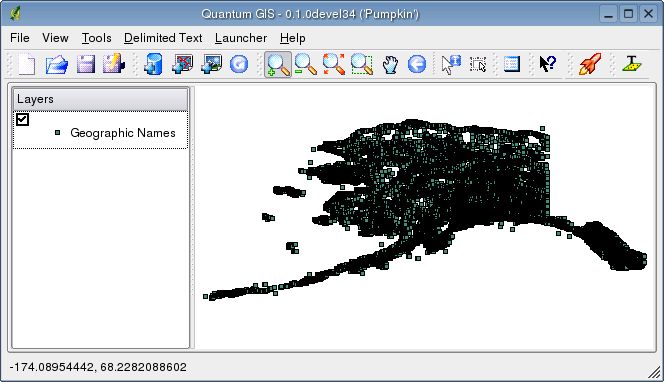

Delmited Text Plugin
The Delimited Text plugin allows you to load a delimited text file
as a layer in QGIS.
Requirements
To view a delimited text file as layer, the text file must contain:
- A delimited header row of field names. This must be the
first line in the text file
- The header row must contain an X and Y field. These fields
can have any name.
- The x and y coordinates must be specified as a number. The
coordinate system is not important
Example of a valid text file
name|latdec|longdec|cell|
196 mile creek|61.89806|-150.0775|tyonek d-1 ne|
197 1/2 mile creek|61.89472|-150.09972|tyonek d-1 ne|
a b mountain|59.52889|-135.28333|skagway c-1 sw|
apw dam number 2|60.53|-145.75167|cordova c-5 sw|
apw reservoir|60.53167|-145.75333|cordova c-5 sw|
apw reservoir|60.53|-145.75167|cordova c-5 sw|
aaron creek|56.37861|-131.96556|bradfield canal b-6|
aaron island|58.43778|-134.81944|juneau b-3 ne|
aats bay|55.905|-134.24639|craig d-7|
Some items of note about the text file are:
- The example text file uses | as delimter. Any character can be used to
delimit the fields.
- The first row is the header row. It contains the fields name, latdec, longdec, and cell
- No quotes (") are used to delimit text fields
- The x coordinates are contained in the longdec field
- The y coordinates are contained in the latdec field
Using the Plugin
To use the plugin you must have QGIS running and use the Plugin Manager to load the plugin:
- Start QGIS
- Open the Plugin Manager by choosing the Tools|Plugin Manager menu. The
Plugin Manager displays a list of available plugins. Plugins that are already loaded have
a checkmark to the left of their name. Click on the checkbox to the left of the Add Delimited Text
Layer plugin and click Ok to load it.

- A new toolbar icon is now present:

- Click on the icon to open the Delimited Text dialog:

- First select the file to import by clicking on the ellipsis button: 
- Select the desired text file from the file dialog
- Once the file is selected, the plugin attempts to parse the file using the last used delimiter, in this case |

- In this case the delimiter | is not correct for the file. The file is actually tab delimited. Note that the X and Y field drop down boxes do not contain valid field names.
- To properly parse the file, change the delimiter to tab using \t (this is a regular expression for the tab character). After changing the delimiter, click Parse
- The drop down boxes now contain the fields properly parsed:

- Choose the X and Y fields from the drop down boxes and enter a Layer name

- Click Add Layer
- The layer is added to the map:
